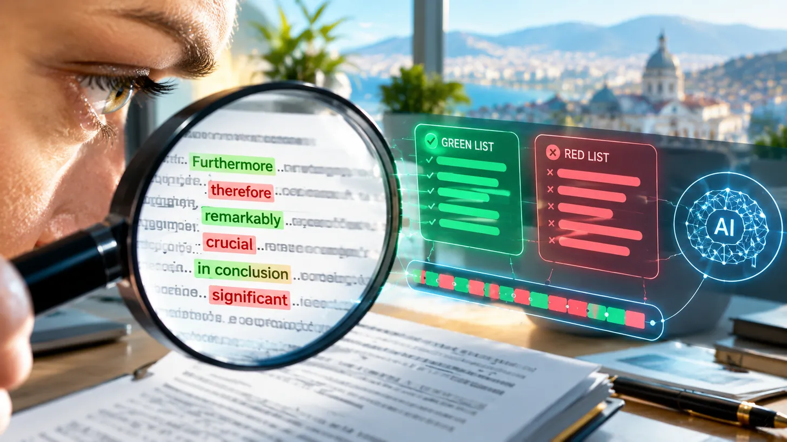

NewsLetter #37
Paura del Watermark di Anthropic? No panic: chi firma, risponde
Anthropic marca ogni testo prodotto da Claude, taluni invitano a smettere di utilizzare gli LLM per salvare lo stile personale,... Nessun timore, basta conoscere.
:: AI Officer :: Newsletter #37 ::Interferenze semantiche sull’AI nella Comunicazione Pubblica - www.aiofficer.blog
giovedì 10 settembre 2026

(ChatGPT_WatermarkNoPanic)
…In breve, per chi ha poco tempo
🔎 La filigrana c’è. Dai modelli lanciati a partire dal 2 agosto 2026, Claude inserisce in ogni testo un “marcatore statistico” invisibile, che l’utente non può disattivare.
⚖️ La norma la impone al fornitore. L’articolo 50, paragrafo 2 del Regolamento (UE) 2024/1689 obbliga chi immette sul mercato il sistema a marcare i contenuti sintetici in formato leggibile meccanicamente.
🛡️ L’esenzione riguarda le redazioni. Il paragrafo 4 esclude dall’obbligo di dichiarazione i testi passati per revisione umana o controllo editoriale, con un responsabile editoriale identificato.
✍️ L’autore resta autore. L’articolo 25 della legge 132/2025 protegge le opere create con l’ausilio dell’intelligenza artificiale, purché costituiscano il risultato del lavoro intellettuale di chi le firma.
🧭 Il rilevatore misura la partecipazione. Tian Zheng, Columbia University, osserva che la prova di provenienza lascia aperte le domande su affidabilità, verità e qualità.
Il fatto
L’11 agosto 2026 Anthropic ha comunicato che tutte le versioni di Claude lanciate a partire dal 2 agosto inseriscono una filigrana invisibile in ogni testo prodotto. La marcatura si applica all’interfaccia di conversazione, l’API della piattaforma, Claude Code, Claude Cowork e Claude Tag e si estende ai file supportati attraverso lo standard aperto C2PA, e l’utente non dispone di alcuna opzione per disattivarla. La data coincide con l’entrata in operatività degli obblighi di trasparenza del Regolamento europeo sull’intelligenza artificiale e con il Codice di condotta europeo sulla trasparenza dei contenuti generati dall’IA, sottoscritto nel luglio 2026 da circa centonovanta soggetti. I modelli già in circolazione prima di quella data rientrano in un periodo di transizione, quindi la copertura reale s’implementa con l’aggiornamento dei modelli.
Come funziona, detto in parole semplici
La parola filigrana suggerisce un’immagine sbagliata, perché nel caso dei testi non esiste nessun segno sovrapposto alla pagina di testo come succede per un’immagine. Un modello linguistico scrive procedendo per passi successivi, e ad ogni passo sceglie la parola seguente fra molte candidate quasi equivalenti: dire “tuttavia” oppure “però”, “esaminare” oppure “analizzare”, cambia poco per il senso della frase. Il sistema di marcatura interviene proprio lì, sulle scelte a basso impatto. Una chiave segreta divide il vocabolario in due insiemi, che la letteratura tecnica chiama per convenzione lista verde e lista rossa, e induce il modello a preferire leggermente le parole della lista verde quando le alternative si equivalgono. Su una singola frase questa preferenza resta invisibile e ininfluente; su un testo di una certa lunghezza diventa una regolarità statistica che un algoritmo, in possesso della chiave, riesce a misurare. Il metodo si chiama SynthID-Text e viene da una ricerca di Google DeepMind. L’esito della verifica è un valore di probabilità, quindi un indizio graduato, che soltanto una soglia stabilita in via convenzionale trasforma nella risposta binaria, è un LLM o non è un LLM, che tutti si aspettano.
Due termini del regolamento vanno chiariti, perché reggono l’intero ragionamento che segue. Il fornitore, in inglese provider, è chi sviluppa il sistema e lo immette sul mercato: nel caso in esame, Anthropic. Il deployer è chi utilizza il sistema sotto la propria autorità nell’esercizio di un’attività professionale: un ente, un’agenzia, una redazione, uno studio. Lo standard C2PA, che riguarda immagini e file, funziona in modo diverso dalla marcatura testuale: attacca al file un pacchetto di metadati firmati digitalmente, che accompagna il documento e resta rimovibile con relativa facilità.
L’allarme di “Cassandra”
Su Agenda Digitale, Marco Calamari ha dedicato alla novità la sua rubrica Cassandra Crossing, arrivando a una conclusione netta: chi tiene all’originalità dei propri testi smetta di farli passare attraverso un modello linguistico (LLM). La ricostruzione tecnica regge in quasi tutti i suoi passaggi. La verifica è probabilistica e fornisce un indizio, mai una prova; va condotta modello per modello; dipende dal possesso di una chiave, quindi non è riproducibile da chiunque; segnala il passaggio attraverso il sistema senza misurarne il peso, così che una generazione integrale e una correzione di refusi lasciano la medesima traccia. Su un punto solo la ricostruzione dell’autore merita una precisazione: Anthropic dichiara un’API di rilevamento in private preview, ossia destinata a regolatori, autorità, testate giornalistiche, verificatori di fatti, ricercatori, istituzioni educative e organizzazioni della società civile. La chiave, quindi, è indirizzata proprio verso chi esercita funzioni di controllo pubblico. Le fonti giornalistiche in questa data divergono sui tempi di rilascio, e su questo punto conviene sospendere il giudizio prima di trarre conclusioni.
Il timore che l’articolo trasmette, però a mio avviso, merita rispetto perché tocca qualcosa di reale: lo stile è una proprietà della persona, e affidarlo a un sistema addestrato sulla media dei testi lo svilisce. Quel timore, però, si rivolge a una figura precisa, l’autore che scrive da solo e risponde soltanto a se stesso, in ambienti dove il sospetto di uso dell’IA equivale a una sanzione. Le redazioni pubbliche lavorano in una condizione differente e hanno un fondamento scritto.
Che cosa dice l’articolo 50
Il Regolamento europeo distribuisce gli obblighi di trasparenza su due soggetti distinti, e la distinzione decide tutto. Il paragrafo 2 grava sul fornitore: chi genera contenuti sintetici deve assicurare che gli output siano marcati in formato leggibile meccanicamente e rilevabili come generati o manipolati artificialmente, con soluzioni tecniche efficaci, interoperabili, solide e affidabili. Anthropic sta adempiendo a questo obbligo, e il Watermark di Claude è la forma tecnica di quell’adempimento. Il paragrafo 4 grava invece sul deployer, e riguarda la pubblicazione: chi diffonde un testo generato o manipolato artificialmente allo scopo di informare il pubblico su questioni di interesse pubblico deve dichiararlo.
Il secondo comma del paragrafo 4 contiene l’esenzione su cui vale la pena fare attenzione. L’obbligo di dichiarazione cade quando il contenuto generato dall’intelligenza artificiale è stato sottoposto a revisione umana o a controllo editoriale, e una persona fisica o giuridica detiene la responsabilità editoriale della pubblicazione. Il legislatore europeo ha scelto la responsabilità come criterio dirimente, collocandola sopra la questione dello strumento impiegato. Un testo verificato e firmato da chi ne risponde esce dal perimetro della disclosure obbligatoria, perché il pubblico dispone già di ciò che gli serve: qualcuno a cui rivolgere una contestazione. Queste sono le disposizioni operative dal 2 agosto 2026.
La fattispecie descrive con precisione l’ufficio comunicazione di un ente pubblico. Il comunicatore pubblico, figura che la legge 150/2000 ha istituito e che l’Associazione Italiana della Comunicazione Pubblica e Istituzionale accredita, esercita una revisione di merito sui contenuti; il giornalista iscritto all’albo porta con sé una deontologia e una responsabilità disciplinare; il dirigente firma l’atto e ne risponde davanti all’amministrazione, alla Corte dei conti e al cittadino. La filiera esiste da venticinque anni ed è documentabile con gli strumenti ordinari del procedimento amministrativo. Basterebbe metterla effettivamente in pratica, anche con i suoi ruoli definiti.
L’autore secondo il diritto italiano
Anche la legislazione ha già scelto lo stesso criterio, e lo ha scritto nel corpo della legge sul diritto d’autore. La 132 del 23 settembre 2025, con l’articolo 25, ha modificato l’articolo 1 della legge 633/1941: la protezione riguarda ora le opere dell’ingegno umano, «anche laddove create con l’ausilio di strumenti di intelligenza artificiale, purché costituenti risultato del lavoro intellettuale dell’autore». Il parametro è il contributo intellettuale della persona, che si misura nel lavoro di ideazione, di selezione delle fonti, di verifica, di struttura e di revisione. La stessa legge, all’articolo 4, stabilisce che l’utilizzo di sistemi di intelligenza artificiale nell’informazione avvenga senza pregiudizio per la libertà e il pluralismo dei mezzi di comunicazione, per la libertà di espressione e per l’obiettività, la completezza, l’imparzialità e la lealtà dell’informazione. Il quadro nazionale e quello europeo convergono su un punto: la tutela segue chi mette il proprio lavoro intellettuale nel testo.
Che cosa controlla davvero un controllore?
Tian Zheng, docente di statistica alla Columbia University, ha commentato l’annuncio il 13 agosto 2026 con un’osservazione che sposta la discussione su un terreno a mio avviso più solido: «la prova di provenienza non è prova di imbroglio, di verità o di qualità». Il marcatore indica che Claude è stato probabilmente coinvolto da qualche parte nel processo di produzione, e tace su tutto il resto: chi ha concepito le idee o quanta parte del lavoro ha svolto il sistema o se il contenuto sia affidabile. Zheng osserva che nel 2026 l’intelligenza artificiale è integrata nel lavoro intellettuale ordinario, al punto che una persona può scrivere per intero un testo proprio e chiedere al sistema soltanto una correzione grammaticale, una sintesi di paragrafi già composti, una traduzione. In quei casi la filigrana documenta una partecipazione, e lascia impregiudicata ogni questione di paternità. La domanda utile, conclude, riguarda quale lavoro intellettuale ci si attendeva e come verificarne l’effettiva comprensione.
Questa newsletter porta in calce, da mesi, una formula che oggi trova un fondamento normativo esplicito: «Testi co-prodotti con sistemi di AIgen, con verifica delle fonti e revisione di merito prima della pubblicazione; responsabilità editoriale: Martin Enrico Iglesias, giornalista professionista …». La filigrana di Claude raggiungerà anche queste righe, e chi ne facesse la verifica troverebbe una dichiarazione scritta prima del controllo. Il timore del rilevatore nasce dove l’uso resta implicito. Dichiarato nei termini che la legge prevede, quell’uso diventa assunzione di responsabilità professionale, con un nome in fondo alla pagina e un ufficio a cui rivolgersi.
Avevo per caso bisogno di inserire “per Legge” o per onestà intellettuale questa dicitura al piede di ogni mia newsletter? No di certo, sono un professionista e mi assumo per mia natura le mie responsabilità. Il fatto che ora esista una specie di disclaimer è dovuto all’argomento della rubrica e per questo per un certo periodo ho deciso di sottolinearne l’utilizzo creativo e sfidare così i pregiudizi. Per una pubblica amministrazione, che risponde invece per legge dei propri atti per definizione, la strada era già segnata.
Fonti di questa puntata
Marco Calamari, «Watermarking di Claude, quali impatti sull’originalità delle opere», Agenda Digitale, rubrica Cassandra Crossing, agosto 2026: https://www.agendadigitale.eu/documenti/watermarking-di-claude-quali-impatti-sulloriginalita-delle-opere/
Anthropic, «How Claude’s text watermarking works», agosto 2026: https://www.anthropic.com/news/claude-text-watermark
Ivan Mehta, «Anthropic says it will watermark text generated by its AI models», TechCrunch, 11 agosto 2026: https://techcrunch.com/2026/08/11/anthropic-says-it-will-watermark-text-generated-by-its-ai-models/
Tian Zheng, «Claude Is Getting an LLM Watermark. But What Exactly Are We Trying to Detect?», TZStats aiX Lab, Department of Statistics, Columbia University, 13 agosto 2026: https://sites.stat.columbia.edu/tzheng/post/2026-08-13-claude-watermark/
Regolamento (UE) 2024/1689 del Parlamento europeo e del Consiglio del 13 giugno 2024, articolo 50, obblighi di trasparenza per i fornitori e i deployer di determinati sistemi di IA: https://eur-lex.europa.eu/eli/reg/2024/1689/oj
Legge 23 settembre 2025, n. 132, «Disposizioni e deleghe al Governo in materia di intelligenza artificiale», articoli 4 e 25, Gazzetta Ufficiale n. 223 del 25 settembre 2025: https://www.gazzettaufficiale.it/eli/id/2025/09/25/25G00143/sg
Legge 7 giugno 2000, n. 150, «Disciplina delle attività di informazione e di comunicazione delle pubbliche amministrazioni»: https://www.normattiva.it/uri-res/N2Ls?urn:nir:stato:legge:2000-06-07;150
:: AI Officer :: Newsletter #37 ::
Interferenze semantiche sull’AI nella Comunicazione Pubblica - www.aiofficer.blog
Substack: https://aiofficer.substack.com
Newsletter LinkedIn: https://www.linkedin.com/newsletters/ai-officer-newsletter-7402362836275875841/
Martin Enrico Iglesias, giornalista professionista ODG Lombardia, comunicatore pubblico, iscritto all’Associazione Italiana della Comunicazione Pubblica e Istituzionale.